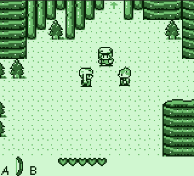
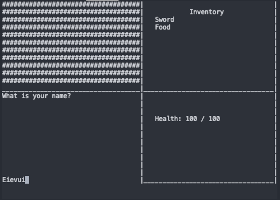

Here are some of the projects I've done!
The first Game Boy project I finished: A Kirby's Dream Land hack which ports the game to the Game Boy Color.
An extensible Game Boy engine written entirely in RGBASM/SM83 assembly, with two custom scripting languages for programming events and enemies.
An experimental Game Boy engine written in C, pushing the limits of the system's video memory and standard graphical capabilities.
A small Python library for creating dynamically-sized GUIs in the terminal.
Oh, and this website!